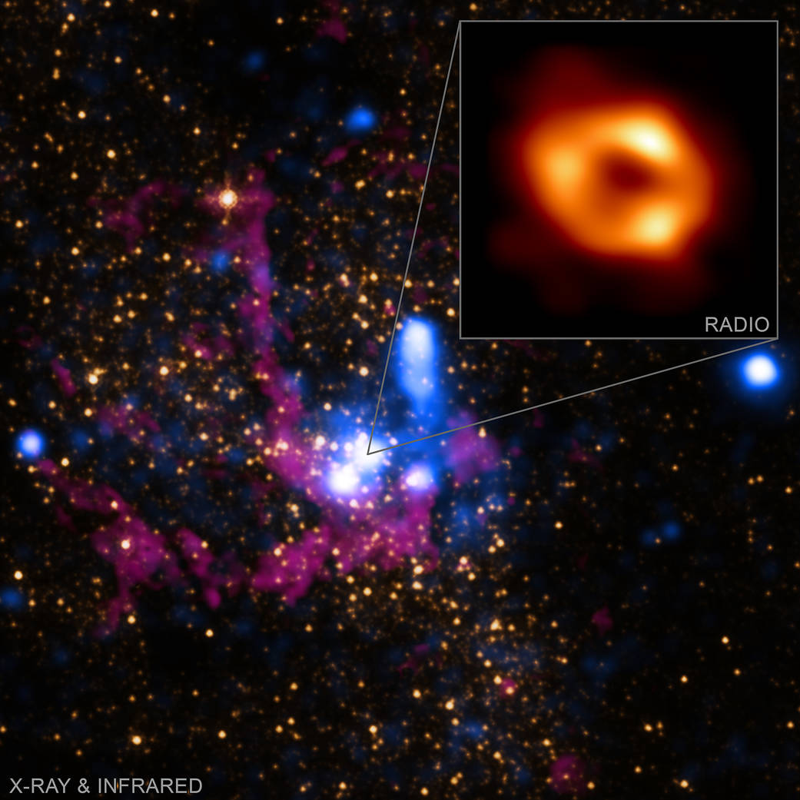

Observação
Luz e matéria deixam cicatriz.
Buracos negros dobram a visão. Nebulosas guardam o rastro luminoso de explosões antigas.
Tema: astronomia
Estrelas explodem, pulsares contam tempo, a gravidade curva trajetos e a luz chega atrasada.
Observação
Buracos negros dobram a visão. Nebulosas guardam o rastro luminoso de explosões antigas.

Até a luz muda de comportamento quando a gravidade domina a cena.

O resto de uma supernova ainda desenha ritmo, brilho e textura.
Universo
Galáxias giram como se improvisassem.
Mas por trás do assombro existe padrão, repetição e força.
Fenômenos
Seis focos
Cada bloco abaixo resume um jeito de o cosmos produzir forma, ritmo ou contraste.
01
Explosão que espalha matéria e memória.
02
Rotação tão precisa que parece compasso.
03
A luz perde a linha quando a massa pesa demais.
Leitura final
Quanto mais fundo se olha, mais claro fica o movimento.
Síntese
É ritmo, matéria e luz organizados em escalas quase absurdas.
Rever fenômenos